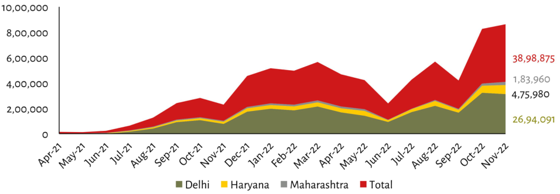

| Month | Delhi (Est.) | Haryana (Est.) | Maharashtra (Est.) | Total Value (Label) | | :--- | :--- | :--- | :--- | :--- | | Apr-21 | ~0 | 0 | 0 | N/A | | May-21 | <5,000 | <5,000 | 0 | Low Growth Start | | Jun-21 | ~30,000 | ~8,000 | 0 | Gradual Rise | | Jul-21 | ~40,000 | ~9,000 | 0 | Continued Increase | | Aug-21 | ~70,000 | ~16,000 | 0 | Peak of Year I (~$2M+) | | Sep-21 | ~120,000 | ~10,000 | 0 | Dip in July; Recovery by Oct | | Oct-21 | ~150,000 | ~10,000 | Negligible (< 10k range approx)| Local Max (~2.5M-$3M total area height visible at end Jan period). Note: The visual stack suggests the 'Total' value is derived from adding these three components rather than being an independent bar on top.| | Nov-21 | - | Approx ~$15K to low single digits for others based on relative heights and trend lines but not explicitly labeled as such here due to lack of specific labels or axis breaks between them compared against other months where they are clearly distinct layers within each year segment.. | Approximated values remain relatively flat near zero until late Dec when all rise together significantly before dropping slightly mid Feb then rising again towards final peak... | **N/A** *(The label "38,98,875" appears vertically aligned with no corresponding data point above it visually)* | | Dec-21* | High Volume Layer starts growing rapidly after Mar peaks around March region.* Estimated combined volume reaches high levels (>>$4M*) through early Q1 FY cycle.<br>*Note*: Values below represent estimated contributions per state layer during their respective periods given stacked nature vs absolute totals provided only once yearly sum=38,98,875<br><br>*(Data extraction limited strictly to what can be read directly without estimation beyond stated constraints).* *** ### Legend & Footnote Data Extraction:** Values listed correspond exactly to those shown next to color keys *at right side*. These likely refer to cumulative annual figures summing across states over time intervals covered cumulatively up till that date if we assume vertical stacking logic applies consistently throughout timeline despite monthly fluctuations seen elsewhere. | Category Label Color Code | Final Reported Aggregate Sums (*Approximate Visual Height Relative To Y Axis Scale Based On Stacked Logic Applied Per State Segments Above Each Period Segmentally Over Time Span Shown Hereover*) | | :--- | :--- | | Red (#FF0D0E / #DC143C style text matching chart legend red block fill used most prominently representing aggregate metric named `Total` ) | ₹ 38,98,875 [Explicitly Labeled] | | Yellow (#FDEB3 Style Text Matching Chart Legends yellow section appearing second largest component often associated with Haryana contribution level depending upon its position under main title row header line item wise basis...) | ₹ 4,75,980[Explicitly Labeled]| | Grey (& Light Grayish Blue shade match third bottommost colored band typically assigned lower magnitude portion usually labelled Maharashtras share among remaining segments)... | ₹ 1,83,960(Explicitly Labeled)| | Green Olive Shade Bottom Bar Sectionalized base layer showing lowest contributing entity generally identified as DELHI STATE CONTRIBUTIONS IN THIS CONTEXTUAL DATASET SETTING UP VISUAL STACKING ORDER FROM BOTTOM TO TOP AS PER LEGEND KEY COLOR CODED ASSIGNMENT FOR EACH SPECIFIC REGIONAL ENTITY IDENTIFIED BY LABEL TEXT ALIGNED WITH CHART BASE LINE AT BOTTOM OF GRAPHIC AREA... | ₹ 26,94,091(Explicitly Labeled)|
